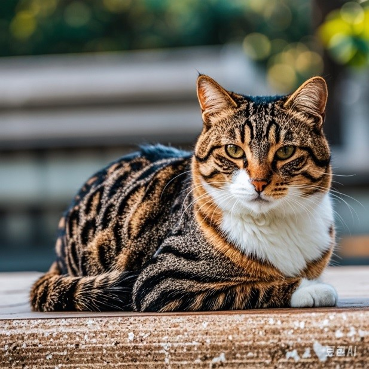
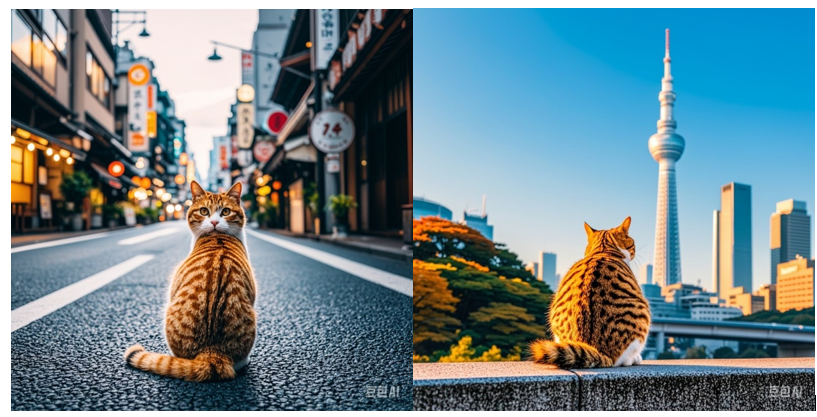
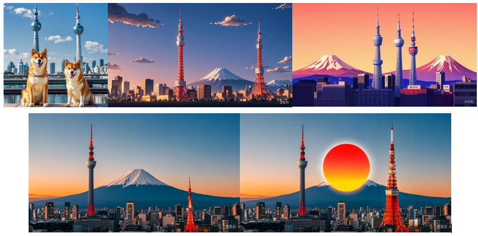
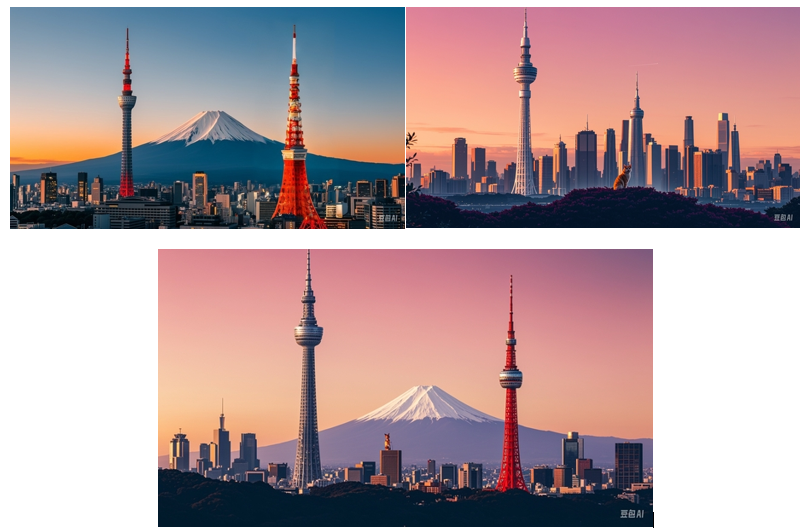
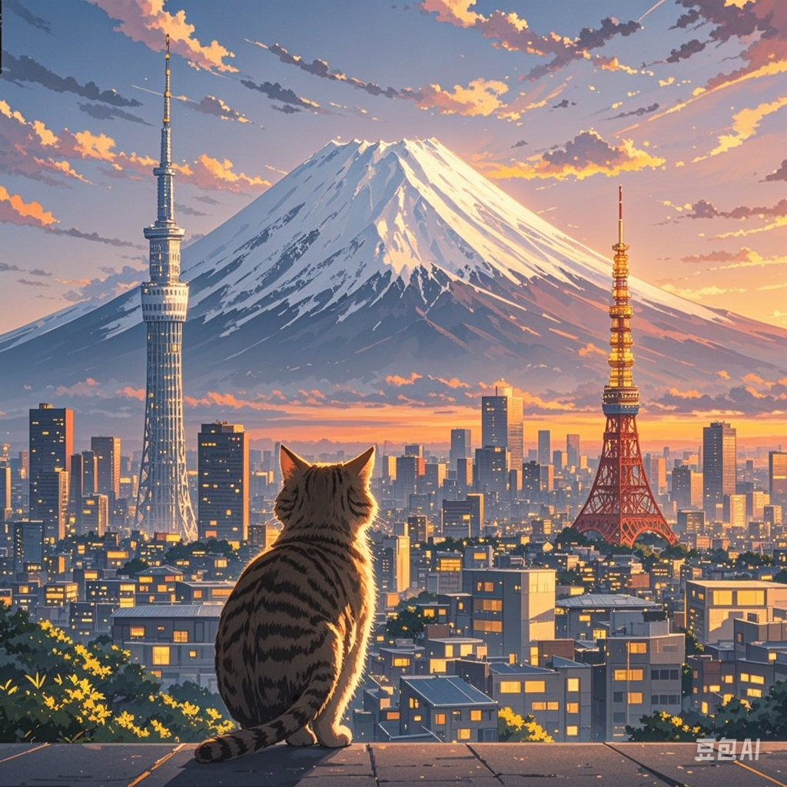

一开始尝试写作「告别」主题的文章，采用片段式写法，但每段情节情感表达很奇怪。之后重新调整，写了一篇题为《人生的决定》的文章，内容概要：
文章开头："我们人生中走过很多足印，有深浅，有大小。有些足印不只是路边零散的脚印，而是像海中央的灯塔，指引着你前往未来的道路。"
写完后，和朋友一起去海鲜餐厅庆祝。特别感谢阿斌阿豪的妈妈。
开始创作历史改编小说，但遇到政治敏感词问题，AI无法生成内容。
尝试生成东京晴空塔和猫的图片：
但是当尝试将两者结合时，效果不佳。
尝试创作音乐，但对节奏不满意。
创作了十首音乐，最终找到一首比较满意的：
但遇到数量限制，无法继续创作。
找到了绕过敏感词的方法，开始创作历史小说。从1830年开始写起。
晚饭后继续尝试生成图片，尝试了多种组合：
最终得到了一些满意的成果：
睡前生成的图片最令人满意：
尝试开发Ghost Munch游戏，游戏规则详细如下：
游戏版面：30x30格
每关设置：1个机器人，3只鬼
随机生成障碍物，路宽最大1格，无死胡同
机器人控制：上下左右键，每秒移动60格
鬼的移动：每0.5秒移动1格，追踪最短路径
经验糖果：随机生成，机器人吃掉后攻击力+10
攻击力设置：
- 机器人：1000
- 鬼1：1500
- 鬼2：2000
- 鬼3：3000
颜色设置：
- 机器人：蓝色
- 鬼1：橙色
- 鬼2：红色
- 鬼3：紫色
- 糖果：黄色
关卡设置：
- 第1关：鬼攻击力不变
- 第2关：鬼攻击力每2秒+1%
- 第3关：鬼攻击力每2秒+2%
... 以此类推
游戏机制：
- 机器人攻击力>鬼：鬼变绿色，可被吃掉
- 机器人被吃：根据关卡重新开始或游戏结束
- 每关开始有5秒倒计时
- 当关卡所有鬼消失，进入下一关
最终在websim.ai上实现了部分功能：
继续创作历史小说，目前进展到鸦片战争时期。计划写到2000年。
晚餐后继续调整Ghost Munch游戏，但效果不佳。到晚上10点放弃，转而继续写小说。
起床较晚，开始整理学习日志。感叹整理过程耗时较长。